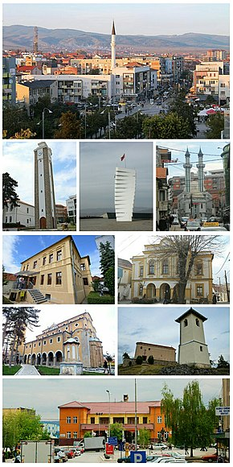
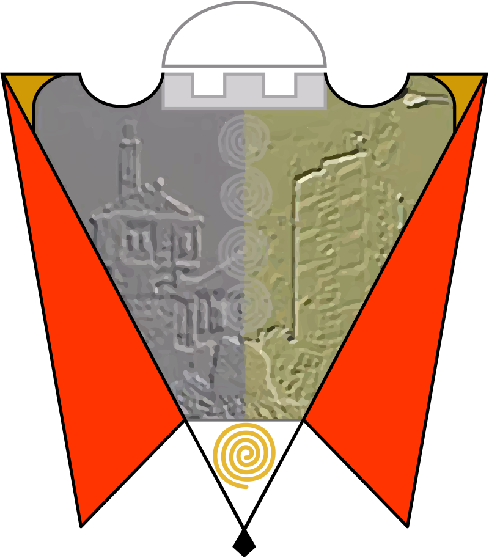
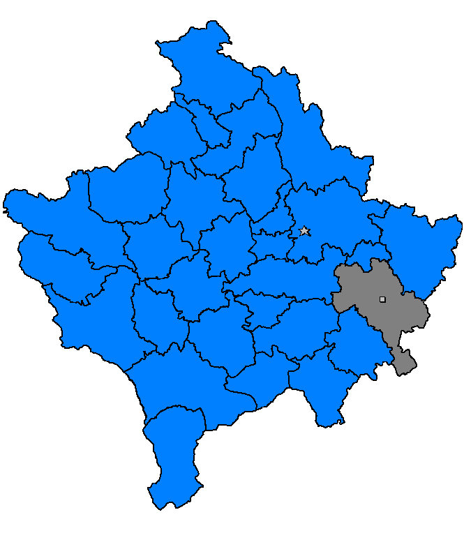

Gjilani (ose Gjilan, serbisht Гњилане/Gnjilane) është një nga shtatë qytetet më të mëdha të Kosovës. Është vendosur në fushën e Gjilanit gjegjësisht në jug-lindje të Kosovës në Anamoravës. Lumi Morava shtrihet në juglindje të Kosovës në rrugën për Preshevë, rreth 4 kilometra larg qendrës së qytetit të Gjilanit. Në pjesën Velekincës së Ulët rrjedh Lumi me emrin Murava. ( Morava), emri i të cilit rrjedh nga vendbanimi i vjetër që është quajtur; Mur pran Vadës - Murava - Velekinca e vjeter. Në bazë të lumit në shekullin XVIII përmendet qyteti i Gjilanit me emrin Muravë, si kadillëk në kuadër të sanxhakut të Vushtrrisë. Gjilani për 3-4 km, shtrihet deri te Lumi Morava, kurse emri i vjetër i Lumit është Angros. Në bazë të emrin ANGROS përmendet edhe në shkrimet e babai të historisë, Herodotit në shekullin e V p.e.s. Në Velekincë dhe Pogragjë gjatë shtrirjes së Moravës janë gjetur shumë gjurmë arkeologjike Ilirie dhe Dardane si 'Vazo, Veshje Ilire'', si dhe janë gjetur 'Varreza Ilire'' (e që me gërmimet e arkeologëve shqiptar në vitet 1979-80, e të cilave janë edhe sot aty) e që në to ka pasur edhe pulla të ndryshme, monedha, stoli të ndryshme, Tumat Ilire Dardanë në Llashticë, Lipovicë pastaj te Kalaja e Pogragjës.
GJILANI
Informata ne forme tabelore per qytetin e Gjilanit
| GJILANI |
|---|
| 
|
| 
|
| 
|
| Shteti:Kosova |
| Rajoni: Gjilani |
| Komuna:Gjilani |
Qeveria
|
Siperfaqja
|
Popullsia
|
| Emri banoreve: Gjilanas |
Zona kohore: UTC+2 (CEST)
|
| Kodi Postar: 60000, Prefiksi: +383 (0) 28 |
| Targat e automjeteve: 06 |
| Faqja Zyrtare: kk.rks-gov.net/gjilan/ |
Meso me shumë:
- Etmologjia
- Historia
- Gjilani ndërmjet dy luftërave botërore
- Mikrotoponimet
- Gjeografia
- Demografia
- Burimet biotike
- Flora
- Fauna
- Klima
- Ujërat
- Liqenet artificiale
- Ujërat termo-minerale
- Ekosistemet e livadheve
- Arkitektura
- Objektet fetare
- Arsimi
- Biblioteka Ndërkomunale “Fan S. Noli”
- Kultura dhe Sporti
- Veshja tradicionale në Anamoravë
- Ekonomia
- Industria
- Pylltaria
- Tregtia
- Zejtaria
- Komunikacioni